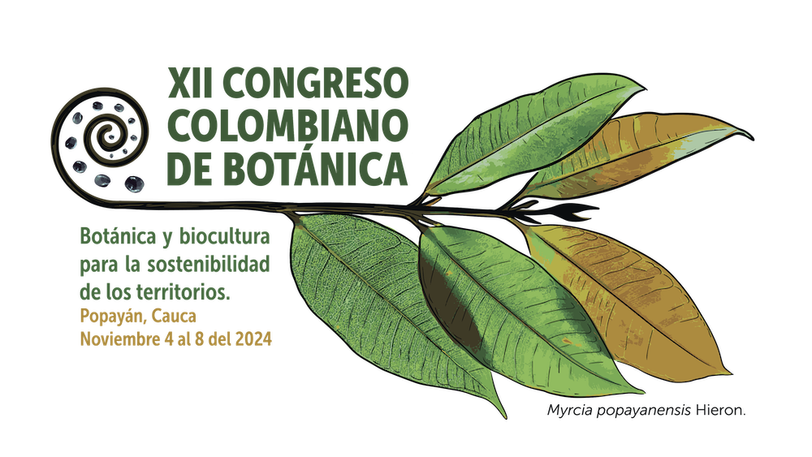

GEOBOTA en el XII Congreso Colombiano de Botánica

Del 4 al 8 de noviembre de 2024 fue el XII Congreso Colombiano de Botánica en Popayán, Colombia. Estuvimos presentes con una variedad de actividades.
Cursos
Conoce todos los detallas haciendo clic en el nombre o en la imagen del curso.
Ponencias
No hay resultados
Pósters
No hay resultados